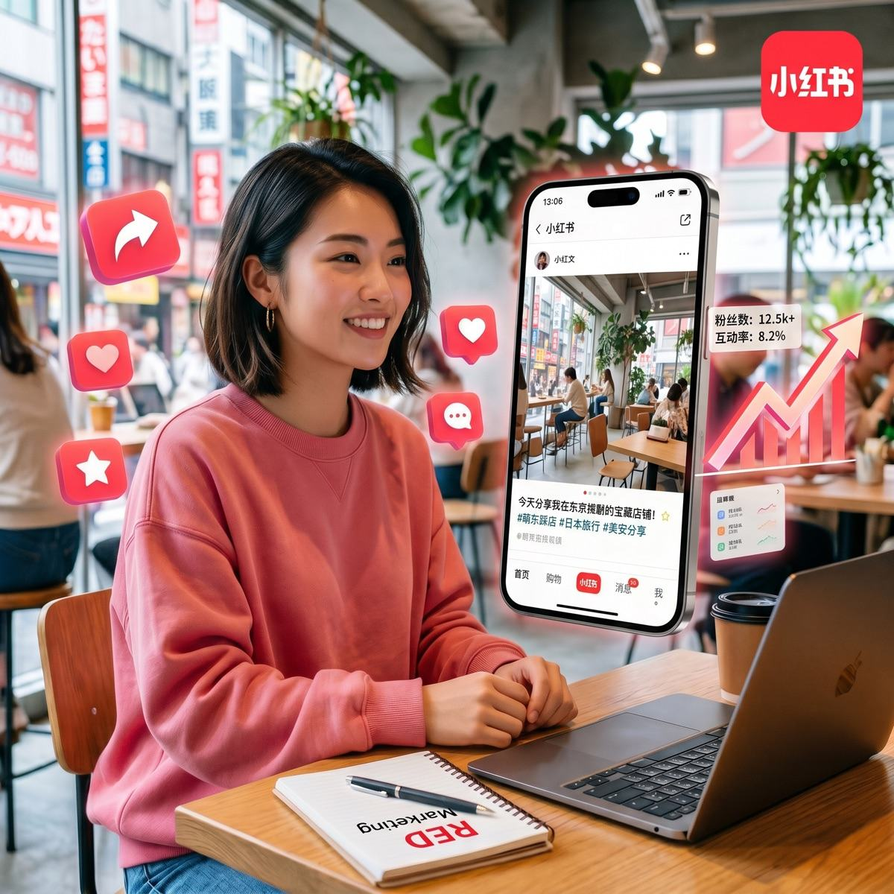
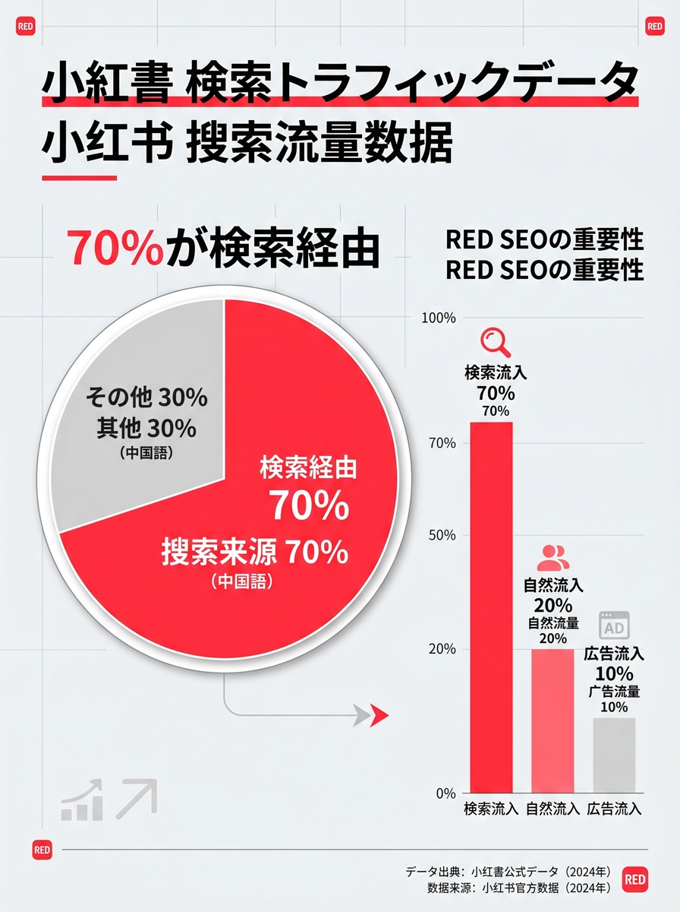
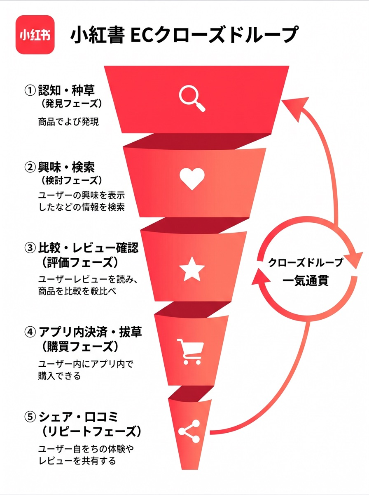

Cost Structure
小紅書運用代行の費用は、主に6つの項目で決まります。
単純な投稿代行だけなら低予算で始められますが、成果を出すには戦略設計、検索キーワード設計、クリエイティブ改善、広告・KOC施策、問い合わせ導線まで見る必要があります。
競合調査、ターゲット設計、プロフィール整備、投稿テンプレート、アカウント開設支援。
初月だけの作業か、3か月分の運用設計まで含むかで費用差が出ます。
投稿企画、中国語原稿、投稿作業、コメント確認、月次レポート、改善提案。
投稿本数だけでなく、分析・返信確認・改善会議の有無を確認します。
写真撮影、ショート動画、店舗紹介素材、メニュー・商品撮影、テンプレート制作。
既存素材活用と新規撮影では、初期費用と制作スピードが変わります。
広告配信設計、KOL/KOC選定、依頼条件交渉、投稿管理、クリエイティブ検証。
広告費や投稿者への実費は、運用手数料と分けて管理するのが安全です。
LP、大衆点評、予約フォーム、問い合わせ導線、店頭オペレーションとの接続。
SNSだけでなく、保存後・問い合わせ後に離脱しない導線が必要です。



Estimate Matrix
見積もりで差が出るポイントを、先に分解します。
「月額いくらか」だけで比較すると、撮影・広告・KOC・返信対応・レポート範囲が抜け落ちます。発注前に、何が月額内で何が別費用かを明確にすることが重要です。
Decision Guide
Next Reading
費用比較の次に確認すべきページ
価格を見た後は、サービス範囲、事例、媒体連携を確認すると発注範囲が決めやすくなります。
FAQ
よくある質問
小紅書運用代行の月額費用はいくらですか？
⌄投稿本数、戦略設計、広告運用、コメント対応、レポート範囲によって変わります。PROTECHでは月額5万円から相談可能です。
初期費用は必要ですか？
⌄アカウント開設、プロフィール設計、競合調査、投稿テンプレート設計などが必要な場合は初期設計費が発生します。
広告費やKOL費用は月額料金に含まれますか？
⌄通常、広告配信費やKOL/KOCへの支払いは別途実費です。契約前に運用管理費と実費範囲を明確化します。